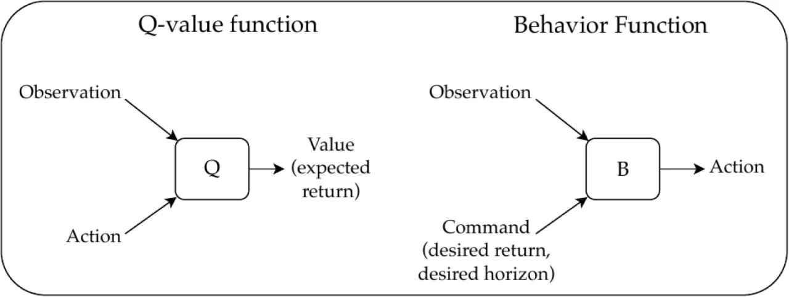
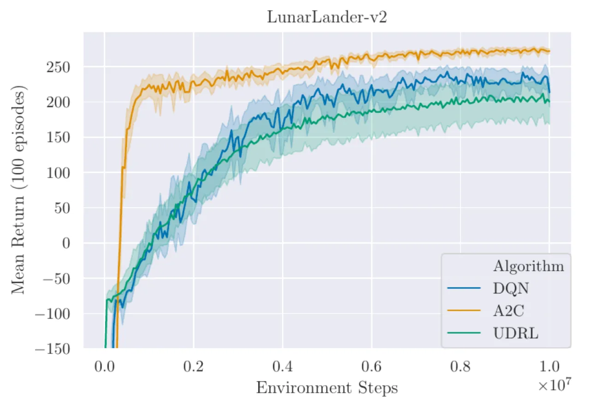
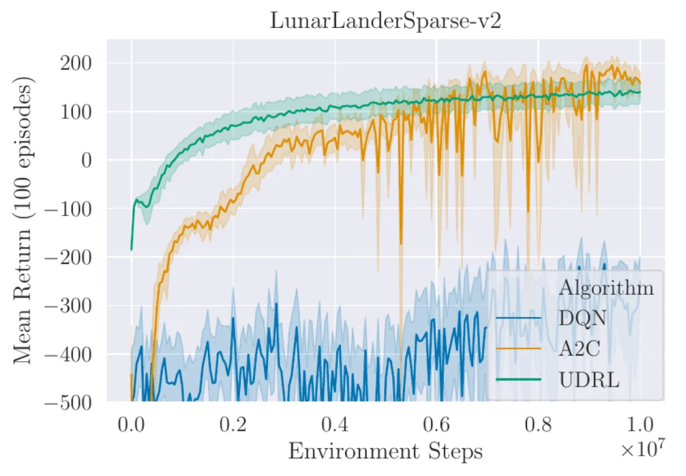
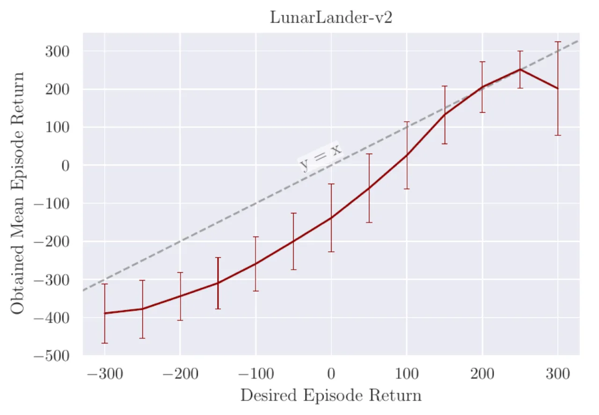

传统强化学习需要预测值函数（value function）或使用策略梯度（policy gradient）。 UDRL 将问题「倒置」：不预测奖励，而是将期望奖励（desired return）和期望步长（desired horizon）作为输入命令， 通过纯监督学习训练智能体直接将命令映射到动作。 实验表明，UDRL 在多个基准任务上可与，乃至超越经历了数十年研究积累的传统 RL 算法。
强化学习（RL）与监督学习（SL）之间有一道根本鸿沟：SL 提供误差信号（error signal）， 而 RL 提供评估信号（evaluation signal）——智能体只知道动作好不好，却不知道最优动作是什么。 能否完全用 SL 来解决 RL 问题？Barto（2004）曾断言「一般情况下这是不可能的」。 UDRL 正面回应了这一挑战。
"Is it possible to learn to act in high-dimensional environments efficiently using only SL, avoiding the issues arising from non-stationary learning objectives common in traditional RL algorithms?" — Srivastava et al., 1912.02877

现有大多数将 SL 引入 RL 的工作（如 target network、RUDDER）只是用 SL 来辅助 RL， 而非替代它。UDRL 则更进一步：将过去的轨迹以「事后解释」（hindsight）的方式标注， 视之为智能体成功跟随命令的示范样本，从而完全在 SL 框架内学习。 Schmidhuber（arXiv:1912.02875）给出了理论框架，Srivastava et al.（arXiv:1912.02877） 则提供了可落地的算法与实验验证。
UDRL 的核心是行为函数（behavior function）B：在给定当前状态 s 和命令 c = (dr, dh) 的情况下，输出动作概率分布。 这里 dr 是期望回报（desired return），dh 是期望步长（desired horizon）。 整个学习过程无需预测值函数，无需策略梯度，用 SL 在历史轨迹上直接优化 B。
形式上，给定状态 s、期望回报 dr、期望步长 dh，行为函数定义为：
B(a, s, dr, dh) = P(A = a | Rdh = dr, S = s; π)
即：在状态 s 下，若希望未来 dh 步内获得总回报 dr，应选哪个动作？ 训练时，从 replay buffer 中随机采样片段 [t1, t2]， 以 (st1, dr=∑r, dh=t2−t1) 为输入， at1 为目标，用交叉熵损失做监督训练——这正是「事后标注」的精髓。
实践中，神经网络直接拼接命令与状态容易导致学习不稳定； 论文发现采用fast weights（gating 或 bilinear 形式）在第一层融合命令输入， 可显著提升可靠性——这使得网络在任何状态下都必须依赖命令输入来决定动作。
所有实验使用全连接前馈网络（TakeCover-v0 使用卷积网络）。 离散动作环境（LunarLander-v2、TakeCover-v0）与基线 DQN、A2C 对比； 连续动作环境（Swimmer-v2、InvertedDoublePendulum-v2）与 TRPO、PPO、DDPG 对比。 所有智能体均训练 10M 步（LunarLander/TakeCover）或 5M 步（MuJoCo）， 分别使用独立的训练和评估随机种子。
四个经典基准任务，涵盖离散和连续动作空间、低维和高维（视觉）观测。 每个任务均进行超参数搜索，并以 20 次独立实验 + 1000 bootstrap 样本的 95% 置信区间进行汇报。
| 任务 | 动作类型 | 主要对比算法 | UDRL 表现 |
|---|---|---|---|
| LunarLander-v2 | 离散 | DQN, A2C | 与 DQN 相近，均超过 200（solved）；A2C 样本效率更高 |
| TakeCover-v0 | 离散（视觉） | A2C, DQN | 明显优于 A2C 和 DQN；基线波动大，UDRL 更稳定 |
| Swimmer-v2 | 连续 | TRPO, PPO, DDPG | 优于 TRPO 和 PPO；与 DDPG 相当，但 DDPG 更不稳定 |
| InvertedDoublePendulum-v2 | 连续 | TRPO, PPO, DDPG | 比其他算法慢得多才达到最大回报（≈9300）；部分 run 未能在步数限内收敛 |

将所有环境奖励延迟至 episode 最后一步才发放（中间步骤奖励为 0）， 测试各算法对极端信用分配（credit assignment）的鲁棒性。
结果：DQN（包括 LSTM 版本）、A2C（50/100-step returns）等基线均不稳定、极慢或完全失败。 唯一表现尚可的基线是 A2C with 20-step returns（但对超参数非常敏感）。 UDRL 则「未作任何修改，保留了大部分密集奖励下的性能」——因为它天然地跨长时间步分配信用， 无需时序差分（temporal difference）。

训练结束后，对同一 LunarLander-v2 智能体设置不同的 dr0（期望回报）， 统计实际获得的平均 episode 回报（100 episodes）。 结果显示 desired vs. obtained return 相关系数 R ≈ 0.98， 说明智能体确实记住了如何按命令执行，而非退化为单一最大回报策略。

UDRL 依赖「事后回顾」（hindsight）生成训练数据：将已实现的轨迹视为成功跟随命令的示范。 但在随机环境中，这些轨迹并非「最优」——它们只提供「能达成某命令」的示例，无法保证命令的最大期望回报。 论文原文：「UDRL relies on retrospectively generating training data based on achieved commands, but it is important to remember this scheme does not yield optimal trajectories for the fulfilled commands in stochastic environments.」
论文的评估命令策略假设「观测到的回报/步长可以以高概率复现」。 对于任意随机性强的环境，这一假设不成立，需要额外建模命令可行性。 论文原文：「This can work well in many environments with low stochasticity, but in general additional algorithmic ingredients are needed to evaluate the feasibility of commands.」
在 InvertedDoublePendulum-v2 上，UDRL 达到最大回报（≈9300）的速度远慢于 TRPO/PPO/DDPG。 部分 run 在允许的步数内未能解决任务，有一次 run 在训练初期就停滞不前。 这说明当前 UDRL 算法在某些任务上样本效率仍有明显差距。
实验发现直接将命令与状态拼接输入网络非常难以训练。 必须使用 fast weights（gating 或 bilinear）才能让网络真正依赖命令输入。 论文原文：「it is crucial that the model class for the behavior function is chosen such that in any state, the appropriate action to take depends strongly on the command input.」
论文明确承认 UDRL 目前没有类似传统 RL（如策略梯度、值迭代）的收敛性或最优性理论保证。 「UDRL does not have similar useful theoretical properties yet.」 在任意随机 MDP 中分析其性能是一个开放问题。
当前探索仅靠从 replay buffer 中最佳轨迹的回报分布采样命令，依赖环境自身随机性来发现新行为。 论文承认这在「动作维度多、随机性不足」的环境中可能不够。 （此条为从设计推断，论文在 Further Research Directions 节中有所涉及。）